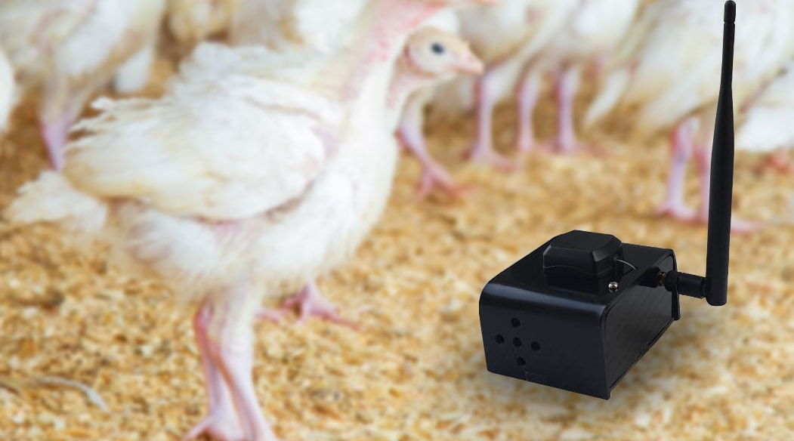

Solar Power and Technology Integration: Building a Smart, Sustainable Poultry Farm
At Feathers and CO POULTRY FARM, we have embraced the fourth industrial revolution in agriculture. Our facility in Nkolafamba is equipped with a comprehensive suite of modern technologies that work together to create an optimal, data-driven environment for our poultry. This integration of renewable energy and smart automation ensures reliability, efficiency, and animal welfare while significantly reducing our operational costs and environmental footprint.
1. Solar Power Infrastructure: The Backbone of Our Operations
Our solar energy system is the foundation that powers all our technological innovations. The installation includes:
- High-Efficiency Photovoltaic Panels: 20kW capacity of monocrystalline solar panels mounted on reinforced roofing structures, optimized for Cameroon's equatorial sun exposure.
- Deep-Cycle Battery Bank: 48V lithium-ion battery storage system with 100kWh capacity, providing up to 72 hours of backup power for critical systems during extended cloudy periods or grid outages.
- Hybrid Inverter System: 15kW pure sine wave inverter with automatic grid-tie capability, seamlessly switching between solar, battery, and grid power to ensure zero interruption.
- Charge Controllers: MPPT (Maximum Power Point Tracking) controllers that optimize energy harvest from panels by up to 30% compared to traditional PWM controllers.
2. IoT Environmental Monitoring Sensors
Precision farming requires precision data. Our poultry houses are equipped with a network of IoT sensors that continuously monitor:
- Temperature Sensors: Digital thermometers placed at bird level throughout the house, providing real-time temperature readings every 5 minutes. Alerts trigger automatically if temperature deviates from the optimal 24-27°C range for broilers.
- Humidity Sensors: Capacitive humidity monitors that track relative humidity levels, critical for preventing respiratory issues and optimizing litter quality. Ideal range: 50-70%.
- Ammonia (NH3) Detectors: Electrochemical sensors that detect harmful ammonia gas buildup from manure, alerting staff when levels exceed 25 ppm to protect bird respiratory health.
- Light Intensity Meters: Photocells that measure lux levels to ensure proper lighting schedules for growth stimulation and rest periods.
- CO2 Monitors: Infrared sensors tracking carbon dioxide levels to ensure adequate ventilation and air quality.
3. Automated Climate Control Systems
Our sensor network is directly integrated with automated climate control equipment:
- Variable Speed Exhaust Fans: 12 high-volume, low-speed (HVLS) tunnel ventilation fans with automated speed control based on temperature and ammonia readings. These fans can move up to 50,000 cubic meters of air per hour.
- Evaporative Cooling Pads: Cellulose cooling pads on the air inlet side, activated automatically when temperature exceeds 28°C, reducing air temperature by up to 8°C through evaporative cooling.
- Automated Curtain Systems: Motorized side curtains that open and close based on wind speed, temperature, and humidity to optimize natural ventilation.
- Misting Systems: High-pressure fogging nozzles that activate during extreme heat to provide evaporative cooling without wetting the litter.
4. Automated Feeding and Watering Systems
Precision nutrition delivery is critical for optimal growth and feed conversion:
- Chain Feeding System: Automated chain-driven feed distribution that delivers fresh feed to all feeding stations on a programmable schedule, reducing feed waste by 15% compared to manual feeding.
- Load Cell Sensors: Weight sensors on feed silos that track consumption in real-time, automatically alerting managers when feed levels drop below 20% capacity.
- Nipple Drinking System: Stainless steel nipple drinkers with pressure regulators, ensuring clean, fresh water is always available while preventing spillage and litter wetting.
- Water Flow Meters: Digital meters that monitor daily water consumption per house, with alerts for abnormal patterns that could indicate health issues or equipment malfunction.
- Automated Water Medication System: Dosing pumps that can automatically administer vaccines or medications through the drinking water on a programmed schedule.

5. Smart Monitoring and Control Dashboard
All our systems are integrated into a centralized smart farm management platform:
- Central Control Panel: Touchscreen interface in the farm office displaying real-time data from all sensors and systems, with color-coded alerts for immediate issue identification.
- Mobile App Integration: Cloud-based platform accessible via smartphone, allowing farm managers to monitor conditions, receive alerts, and adjust settings remotely 24/7.
- Data Logging and Analytics: All sensor data is stored in the cloud, enabling trend analysis, performance benchmarking, and data-driven decision making for continuous improvement.
- Predictive Maintenance Alerts: AI-powered algorithms analyze equipment performance data to predict maintenance needs before failures occur, minimizing downtime.
6. LED Lighting Systems
Our poultry houses feature energy-efficient, programmable LED lighting:
- Dimmable LED Fixtures: Full-spectrum LED lights with 0-100% dimming capability, programmed to simulate natural dawn and dusk transitions, reducing bird stress.
- Photoperiod Control: Automated lighting schedules that adjust based on bird age and production stage, optimizing growth rates and feed conversion.
- Energy Savings: LED lights consume 70% less energy than traditional incandescent bulbs and have a lifespan of 50,000+ hours.
Economic and Environmental Impact
The integration of these technologies has transformed our operations:
- Energy Cost Reduction: 85% reduction in electricity costs through solar power and LED efficiency.
- Labor Efficiency: 40% reduction in manual labor hours through automation, allowing staff to focus on bird health and welfare.
- Feed Conversion Improvement: 12% better feed conversion ratio (FCR) due to optimal environmental conditions and precise feeding.
- Mortality Reduction: 60% lower mortality rate compared to traditional farms, thanks to early warning systems and automated climate control.
- Water Conservation: 30% reduction in water waste through nipple drinkers and leak detection systems.
- Carbon Footprint: Elimination of 45 tons of CO2 emissions annually through solar power generation.
At Feathers and CO, technology is not just about innovation—it's about responsibility. We are committed to producing high-quality poultry products while protecting the environment, ensuring animal welfare, and setting a new standard for modern, sustainable agriculture in Cameroon and across Africa.


Emmanuel Nkomo Reply
This is incredibly detailed and inspiring! I'm planning to upgrade my 500-bird farm with some of these technologies. Which system would you recommend implementing first for someone on a limited budget—the solar setup or the IoT sensors?
Feathers and CO Team Reply
Hello Emmanuel! Great question. For a 500-bird operation on a limited budget, I would recommend starting with the IoT temperature and humidity sensors first (approximately 150,000-200,000 FCFA). These provide immediate value by preventing heat stress mortality, which can wipe out profits quickly. Once you see the ROI from reduced mortality, you can reinvest those savings into solar panels. We actually cover phased technology implementation in our Farmer Training Workshops—would love to have you attend!